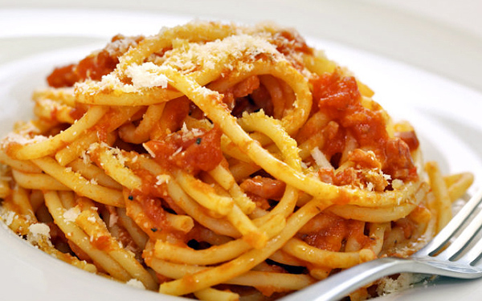

Pasta all'Amatriciana

Descrizione
Un grande classico della cucina romana, un primo piatto emblema della cucina italiana a base di bucatini, pomodoro,
guanciale e pecorino. Le interpretazioni della ricetta originale sono varie ma prevedono principalmente proporzioni diverse
tra questi quattro ingredienti principali. La pasta all'amatriciana è un primo semplice ed economico, dal successo garantito.
Ingredienti
- 320 g di bucatini (oppure spaghetti o spaghettoni)
- 300 g di pomodori pelati (in stagione 4-5 pomodori rossi maturi)
- 120 g di guanciale stagionato a fette spesse
- 50 g circa di pecorino (delicato e non troppo salato) grattugiato
- 1 peperoncino
- 1/2 bicchiere di vino bianco secco e acidulo
- olio extravergine di oliva
- sale
- pepe
Procedimento
- Se utilizzate i pomodori freschi, per prima cosa sbollentateli per pochi istanti in acqua bollente salata,
scolateli e raffreddateli sotto acqua corrente. Dopo averli pelati, eliminate i semi e tagliateli a filetti.
- In una padella (preferibilmente di ferro) scaldate l’olio e aggiungete il guanciale tagliato a listarelle lunghe
circa un paio di centimetri. Quando avrà iniziato a fondere unite il peperoncino.
- Rosolate il guanciale fino a quando avrà preso colore, quindi sfumate con il vino bianco.
Lasciate evaporare, scolate il guanciale e tienete da parte al caldo.
- Nella stessa padella mettete i pomodori pelati schiacciati (oppure quelli freschi precedentemente preparati),
regolate di sale e cuocete per il tempo di cottura della pasta, che nel frattempo avrete buttato all'interno di
una casseruola con acqua bollente salata.
- Quando sarà quasi giunta a cottura unite il guanciale al condimento ed eliminate il peperoncino.
Scolate la pasta al dente e trasferitela nella padella con il sugo. Fuori dal fuoco aggiungete il pecorino
grattugiato e regolate di pepe fresco di mulinello a piacere.
- Mescolate bene e servite subito, completando la vostra pasta all'amatriciana con altro pecorino.